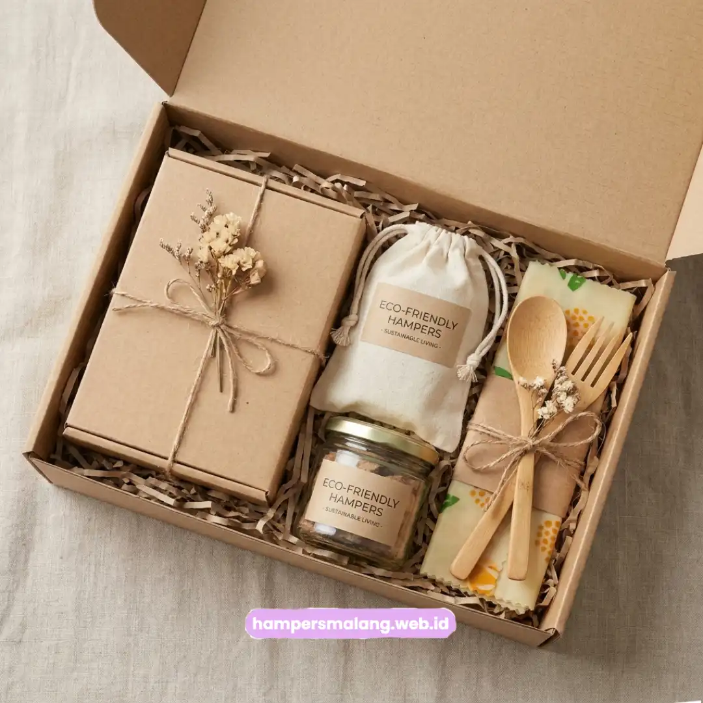
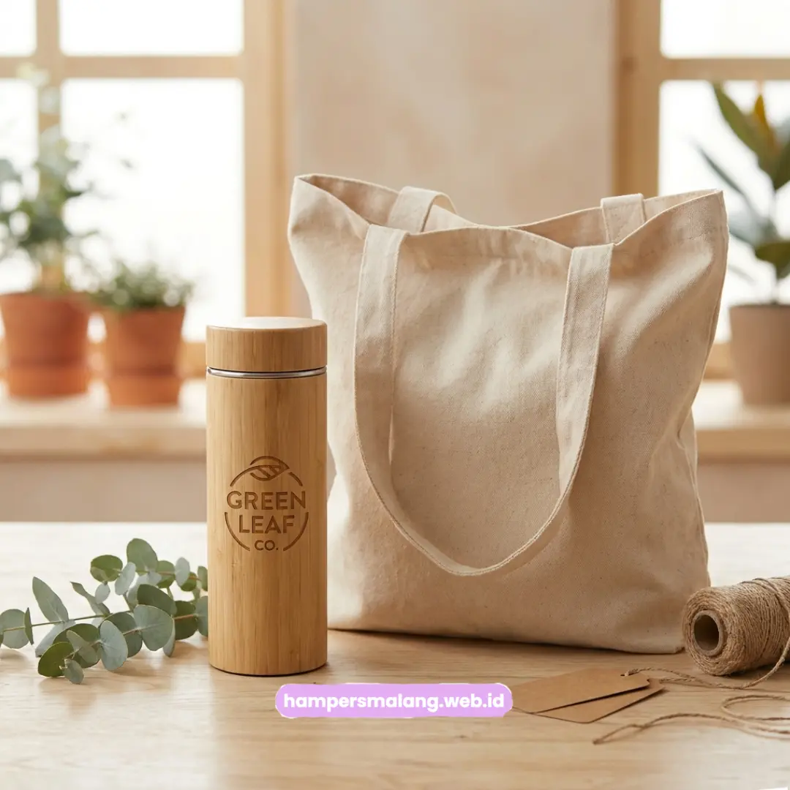

Seminarkit ID menyediakan paket hampers ramah lingkungan untuk apresiasi karyawan di Semarang.
Paket ini menggunakan material bambu, kanvas, dan kemasan daur ulang sebagai bahan utamanya.
Perusahaan di Semarang semakin ingin menunjukkan kepedulian lingkungan bukan hanya lewat program CSR di atas kertas.
Perusahaan semakin ingin menunjukkan kepedulian lingkungan lewat program apresiasi karyawan.
Material bambu dan kertas daur ulang menjadi pilihan populer untuk hampers ramah lingkungan.
Tote bag kanvas dan tumbler bambu grafir sering menjadi item utama dalam paket.
Kemasan daur ulang turut memperkuat pesan keberlanjutan yang ingin disampaikan perusahaan.
Kepedulian Lingkungan Jadi Prioritas Perusahaan
Kepedulian ini juga ditunjukkan lewat detail kecil seperti pemilihan souvenir kantor untuk karyawan.
Hampers ramah lingkungan menjadi salah satu cara nyata untuk menyampaikan nilai keberlanjutan tersebut kepada karyawan.
Baca Juga: Paket Hampers Ramah Lingkungan untuk Apresiasi Karyawan di Bandung
Material Ramah Lingkungan yang Paling Diminati
Beberapa material berikut menjadi pilihan yang paling diminati perusahaan untuk paket hampers apresiasi karyawan.
Bambu digunakan untuk item seperti tumbler bambu grafir dan aksesoris kerja lainnya.
Kanvas dipilih untuk tote bag yang dapat digunakan berulang sebagai pengganti kantong plastik.
Kertas daur ulang dimanfaatkan untuk kemasan maupun kartu ucapan dalam paket hampers.
Kain organik menjadi pilihan untuk item seperti pouch atau tas kecil pelengkap hampers.

Contoh Isi Paket Hampers Berkelanjutan
Contoh isi paket dapat membantu perusahaan menyusun komposisi item sesuai nilai keberlanjutan yang ingin disampaikan.
Paket hampers ramah lingkungan biasanya terdiri dari tumbler bambu grafir dan tote bag kanvas custom logo.
Item pelengkap seperti notebook berbahan kertas daur ulang turut menambah kesan personal pada paket.
Kombinasi ini dipilih karena menghadirkan kesan apresiasi yang hangat sekaligus selaras dengan nilai ramah lingkungan.
Cara Mengomunikasikan Nilai Sustainability lewat Packaging
Kemasan hampers turut berperan penting dalam menyampaikan pesan keberlanjutan, tidak hanya dari isi produknya.
Penggunaan kemasan daur ulang tanpa lapisan plastik berlebih dapat memperkuat kesan keberlanjutan tersebut.
Pemilihan tinta cetak yang aman untuk lingkungan menunjukkan perusahaan menerapkan nilai sustainability, bukan sekadar jargon.
Melayani Pemesanan Hampers Ramah Lingkungan dari Semarang
Seminarkit ID melayani pemesanan paket hampers ramah lingkungan untuk apresiasi karyawan dari perusahaan di Semarang.
Proses konsultasi komposisi paket dilakukan terlebih dahulu sebelum masuk ke tahap produksi massal.
Tim Seminarkit ID membantu perusahaan menyusun komposisi hampers sesuai anggaran dan nilai keberlanjutan yang ingin disampaikan.
Tanya Jawab Seputar Hampers Ramah Lingkungan
Perusahaan memilih hampers ramah lingkungan untuk menunjukkan kepedulian terhadap lingkungan secara nyata kepada karyawan, bukan hanya melalui program CSR di atas kertas.
Material yang paling diminati adalah bambu, kanvas, kertas daur ulang, dan kain organik untuk item pelengkap seperti pouch atau tas kecil.
Tote bag kanvas dan tumbler bambu grafir sering menjadi item utama, dilengkapi kemasan daur ulang dan kartu ucapan berbahan kertas daur ulang.

Butuh Hampers Ramah Lingkungan Eksklusif?
Dapatkan Penawaran Terbaik untuk Karyawan Anda.
Ditulis oleh Tim Maroon Souvenir
Ahli dalam perancangan hampers dan corporate gift untuk perusahaan. Membantu klien memberikan kesan mendalam melalui hadiah berkualitas.